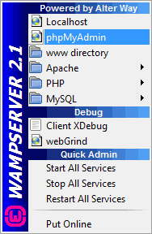
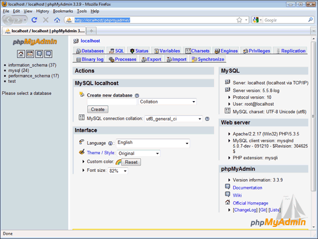

PHP and MySQL
PHP has the ability to connect to and manipulate databases. The most popular database system that is used with PHP is called MySQL. This is a free database system, and comes with the Wampserver software you may have installed at the start of the course. We will be working with MySQL databases throughout these lessons.
We'll create our databases with phpMyAdmin, which is part of MySQL. If you installed Wampserver then you can go to the phpMyAdmin section quite easily. Click the icon in the bottom right and select phpMyAdmin from the menu:

Another way to bring up phpMyAdmin is to simply type the following address in
your browser:
http://localhost/phpMyAdmin/
You should see the phpMyAdmin page display:

We're going to be creating databases using this. But if you can see the page OK, then you have everything you need. You might want to bookmark the mysql page, though!
If you can't see the page, then either MySQL isn't installed, or it's not configured correctly. Again, you need to refer to the documentation to fix this.
However, we have a few databases amongst the files you downloaded. So you can still follow along with the later tutorials.
In the next part, you'll see how to create a database with phpMyAdmin.